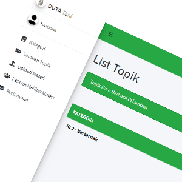
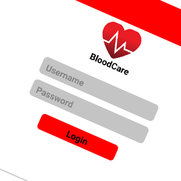

E-learning Dutatani
Reksy747/dutani
An application that bridges farmers in sharing agricultural knowledge. Admins and teachers approve users, share knowledge and answer questions about agriculture.
View on GitHubDevOps Engineer · MEMBER.ID
GCP · Alibaba Cloud · AWS · Kubernetes
– Present
MEMBER.ID · Full-time · South Jakarta, hybrid
In service since Mar 2023Part of the Engineering team, responsible for maintaining cloud infrastructure and improving the reliability, security and availability of production systems.
–
Pegipegi · Full-time · Jakarta
Part of the functional team, focused on the compilation, assembly and delivery of source code into finished products and other software components.
–
Duta Wacana Christian University · Part-time
Helped students understand Amazon Web Services, including Load Balancers, EC2, Launch Configurations, S3 buckets and RDS.
–
Dutatani.id, Duta Wacana Christian University · Internship · Hybrid
–
Gadjah Mada University (UGM) · Internship
– 2021
Freelance · Klaten Tengah, Central Java
Ran alongside university in Yogyakarta.
–
SMK Petrus Kanisius Klaten · Part-time

Reksy747/dutani
An application that bridges farmers in sharing agricultural knowledge. Admins and teachers approve users, share knowledge and answer questions about agriculture.
View on GitHub
Reksy747/BloodCare
A system for recording blood pressure and blood sugar levels.
View on GitHub| Cloud | Google Cloud Platform (GCP), Alibaba Cloud, Amazon Web Services (AWS) |
|---|---|
| Orchestration | Kubernetes, Google Kubernetes Engine (GKE), Amazon EKS, Docker |
| Delivery | Jenkins, GitHub Actions, GitLab CI/CD, Git, Terraform |
| Observability | New Relic, monitoring, logging, SLA dashboards, incident response, root cause analysis |
| Systems | Linux, system administration, Bash, NGINX |
| Networking | SSL/TLS, DNS, load balancing, VPN, MikroTik, computer networking |
| Development | Laravel, Java, PostgreSQL, MySQL |
| Hardware | Computer hardware assembly and repair |
–
Bachelor of Science in Computer Science · Yogyakarta
Assistant Lecturer of Administration Systems.
–
Computer and Networking · Klaten
IT Support team, Robotics Club, and student council vice president.
–
Cinematography club · Training Division
An organization for film enthusiasts at Duta Wacana Christian University.
–
Faculty of Informatics, UKDW · Public Relations Division
An annual event organized by the Student Executive Board (BEM) of the Faculty of Informatics, introducing new students to the learning environment.
| Certificate | Issuer | Issued |
|---|---|---|
| MTA: Introduction to Programming Using HTML and CSS | Microsoft | Apr 2021 |
| Junior Network Administrator | BNSP Republik Indonesia | Apr 2021 |
| Certification of Accomplishment: SAP Fundamentals | SAP | Jul 2019 |
| Computer and Network Engineering Competency Test | PT. Angkasa Media Telekomunikasi | Mar 2017 |
Hiring for DevOps or SRE? Send a message here, or reach me on LinkedIn.